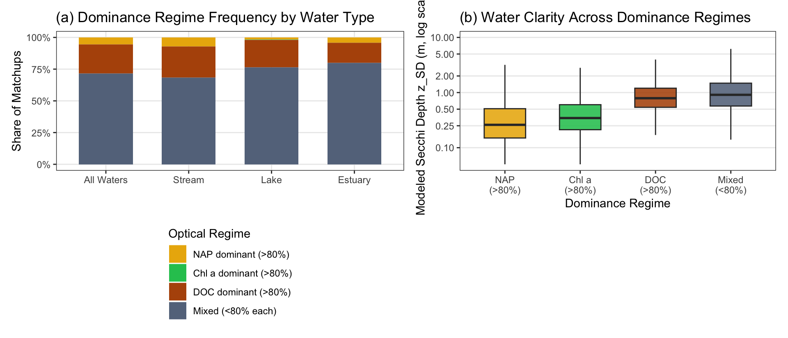

Section 8 Continental Application & Dominance Regimes (apply_model7())
8.1 Continental 3-Constituent Application Dataset (n = 478,929)
Once Model 7 is calibrated on the 277,382 four-variable training matchups, it requires only the three constituent concentrations (\(\text{NAP}\), \(\text{DOC}\), and \(\text{Chl }a\)) to partition non-water light attenuation. We can therefore apply Model 7 across all 478,929 simultaneous 3-constituent matchups in the harmonized AquaMatch dataset (with or without a paired Secchi measurement) that lie within the empirical concentration bounds of the training set and have strictly positive \(\text{NAP} > 0.01\text{ mg L}^{-1}\):
| Dataset Subset | Observations (n) | Unique Monitoring Sites |
|---|---|---|
| 4-Variable Training Dataset (Secchi + 3 LACs measured, screened) | 277,382 | 22,567 |
| Continental 3-LAC Application Dataset (within training bounds & NAP > 0.01 mg/L) | 478,929 | 39,396 |
| ├── Application matchups with Measured Secchi depth | 275,287 | 22,541 |
| └── Application matchups with Modeled Secchi depth only (no measured Secchi) | 203,642 | 22,718 |
For each observation \(r\), the non-water light attenuation share of constituent \(i \in \{\text{NAP}, \text{DOC}, \text{Chl }a\}\) and the modeled Secchi depth (\(\hat{z}_{SD,r}\)) are:
\[f_{i,r} = \frac{\alpha_i C_{i,r}}{\alpha_{\text{NAP}}\,\text{NAP}_r + \alpha_{\text{DOC}}\,\text{DOC}_r + \alpha_{\text{Chl }a}\,\text{Chl }a_r}, \qquad \hat{z}_{SD,r} = \frac{1}{k_w + \alpha_{\text{NAP}}\,\text{NAP}_r + \alpha_{\text{DOC}}\,\text{DOC}_r + \alpha_{\text{Chl }a}\,\text{Chl }a_r}\]
Across all 478,929 application matchups, 89.7% (429,414 records) use Level III ecoregion-specific Model 7 slopes and 10.3% (49,515 records) use the global Model 1 fallback.
8.2 Continental Mean Ternary Partitioning by Water-Body Type
Across all 478,929 matchups, average non-water light attenuation is led by DOC (58.8%), followed by NAP (33.0%) and Chl a (8.2%). Streams (58.7% DOC, 34.6% NAP, 6.7% Chl a) and estuaries (57.1% DOC, 37.0% NAP, 5.8% Chl a) cluster tightly along the DOC–NAP axis, whereas lakes (60.5% DOC, 23.1% NAP, 16.5% Chl a) exhibit more than double the phytoplankton attenuation share and span the full ternary triangle:
| Water-Body Type | Observations (n) | Unique Sites | Mean DOC % | Mean NAP % | Mean Chl a % | SD DOC | SD NAP | SD Chl a |
|---|---|---|---|---|---|---|---|---|
| All Waters | 478,929 | 39,396 | 58.8% | 33.0% | 8.2% | 25.0% | 24.4% | 10.4% |
| Stream | 318,091 | 21,513 | 58.7% | 34.6% | 6.7% | 26.1% | 25.3% | 8.8% |
| Lake | 82,517 | 8,942 | 60.5% | 23.1% | 16.5% | 22.7% | 19.0% | 14.5% |
| Estuary | 78,321 | 8,941 | 57.1% | 37.0% | 5.8% | 22.2% | 22.7% | 6.6% |
8.3 Water Clarity Across \(>80\%\) Dominance Regimes (\(p < 0.01\))
How does absolute water clarity (\(z_{SD}\)) vary when a single constituent dominates light attenuation? Grouping observations into four dominance regimes based on an \(80\%\) threshold (NAP-dominant \(f_{\text{NAP}} > 0.80\), Chl a-dominant \(f_{\text{Chl }a} > 0.80\), DOC-dominant \(f_{\text{DOC}} > 0.80\), and Mixed) reveals an important distinction between frequency of dominance and severity of turbidity:
- DOC is the most frequent single dominant attenuator (
116,567samples, mean \(z_{SD} = 1.10\text{ m}\)), because background humic DOC absorbs light even in relatively clear streams and lakes when suspended sediment and algal biomass are low. - NAP-dominant waters (
25,793samples, typically storm-flow sediment plumes and erosive rivers) have the lowest water clarity (mean \(z_{SD} = 0.40\text{ m}\), median \(0.24\text{ m}\)), followed by hyper-eutrophic Chl a-dominant blooms (mean \(z_{SD} = 0.71\text{ m}\), median \(0.38\text{ m}\)), DOC-dominant waters (\(1.10\text{ m}\)), and Mixed waters (\(1.23\text{ m}\)).

Figure 8.1: (a) Proportion of samples in each >80% dominance regime by water-body type. (b) Modeled Secchi disk depth (z_SD, log scale) across the four dominance regimes; all six pairwise comparisons are significant at p < 0.01.
| Dominance Regime (>80%) | Observations (n) | Unique Sites | Mean Modeled Secchi (m) | SD (m) | Median Modeled Secchi (m) | Mean Combined Secchi (m) | Mean Measured Secchi (m) |
|---|---|---|---|---|---|---|---|
| NAP dominant | 25,793 | 5,316 | 0.40 | 0.52 | 0.24 | 0.41 | 0.52 |
| Chl a dominant | 129 | 102 | 0.71 | 0.90 | 0.38 | 1.04 | 1.63 |
| DOC dominant | 116,567 | 16,651 | 1.10 | 0.98 | 0.79 | 1.20 | 1.02 |
| Mixed | 336,440 | 29,780 | 1.23 | 1.10 | 0.90 | 1.23 | 0.99 |
| Pairwise Comparison | Mean Difference (m) | Welch t-test p (Holm-adj.) | Wilcoxon rank-sum p (Holm-adj.) | Significant at p < 0.01? |
|---|---|---|---|---|
| Chl a dominant vs. NAP dominant | 0.311 | 0.000149 | 3.27e-07 | ✔ Yes (p < 0.01) |
| DOC dominant vs. NAP dominant | 0.704 | < 1e-300 | < 1e-300 | ✔ Yes (p < 0.01) |
| DOC dominant vs. Chl a dominant | 0.393 | 4.65e-06 | 8.60e-24 | ✔ Yes (p < 0.01) |
| Mixed vs. NAP dominant | 0.831 | < 1e-300 | < 1e-300 | ✔ Yes (p < 0.01) |
| Mixed vs. Chl a dominant | 0.520 | 3.79e-09 | 9.51e-25 | ✔ Yes (p < 0.01) |
| Mixed vs. DOC dominant | 0.127 | 2.39e-298 | < 1e-300 | ✔ Yes (p < 0.01) |